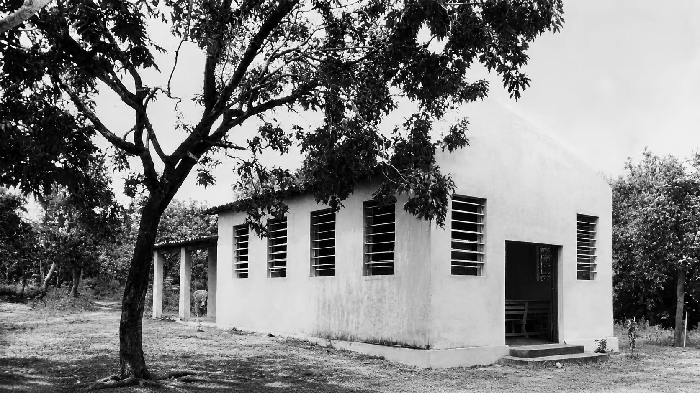
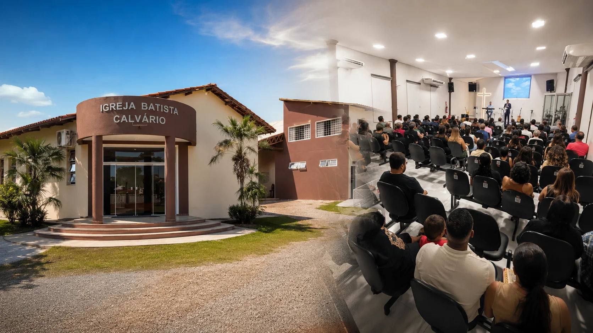

1975
O primeiro templo começa a nascer
Por volta de 1975, iniciou-se a construção do primeiro templo da Congregação Batista do Calvário, na comunidade do Moinho, hoje bairro Santa Cruz II.
De uma pequena congregação no antigo Moinho a uma igreja que segue anunciando Jesus e acolhendo famílias em Cuiabá.
A Igreja Batista Calvário é uma comunidade cristã batista comprometida com as Escrituras, a missão e o cuidado de pessoas.
Celebramos a fé em comunidade por meio dos cultos, da Escola Bíblica Discipuladora, dos ministérios por faixa etária, da comunhão nos lares e do serviço cristão. Nossa esperança é que cada pessoa conheça o evangelho, amadureça como discípulo de Jesus e use seus dons para servir.
Cada etapa guarda a dedicação de pessoas que creram, serviram e prepararam o caminho para as gerações seguintes.
Por volta de 1975, iniciou-se a construção do primeiro templo da Congregação Batista do Calvário, na comunidade do Moinho, hoje bairro Santa Cruz II.
Após anos de trabalho e cooperação, a construção do primeiro templo foi concluída, oferecendo um lugar de culto, ensino e comunhão à congregação.
Em 31 de agosto, os membros reuniram-se em assembleia e a congregação foi organizada como IBC — Igreja Batista Calvário, deixando de ser congregação da Primeira Igreja Batista de Cuiabá.
Seguimos servindo Cuiabá com adoração, ensino bíblico, missões, ministérios para todas as idades e o mesmo compromisso de anunciar o evangelho de Jesus Cristo.
Duas imagens, décadas de diferença e a mesma graça sustentando nossa caminhada.


A Bíblia é nossa regra de fé e conduta e orienta o ensino, o discipulado e a vida da igreja.
Somos um corpo: cuidamos uns dos outros, celebramos juntos e dividimos os pesos da caminhada.
Existimos para glorificar a Deus, anunciar o evangelho e servir nosso próximo com amor e verdade.
Conheça nossos encontros e venha viver um tempo de fé, comunhão e crescimento conosco.